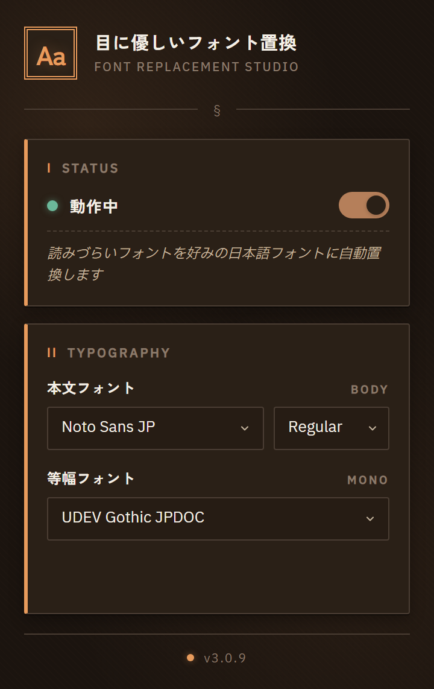

狙ったものだけ置換
全フォント置換ではなく、読みづらい指定だけを対象にします。
Japanese font replacerChrome / Firefox
MS ゴシックやメイリオなど、狙ったフォントだけを好みの書体へ置換。サイトのデザインを崩さずに、本文の見やすさだけを上げます。

REPLACEMENT LOGIC
置換の対象と考え方
サイト側が意図した装飾フォントには触れないため、見た目を保ったまま本文だけが読みやすくなります。
インストールした時点から、対象フォントの置換が始まります。
ポップアップから本文用・等幅用の書体を選択。設定は自動保存されます。
トグルボタンで、サイトごとに気になるときだけ無効化できます。
FEATURES
エディタや作図サービスなど、フォント指定が意味を持つサイトは既定で除外しています。置換が邪魔になる場所では、そもそも動きません。
対象と処理の一覧
| 対象 | 処理 | 状態 |
|---|---|---|
| MS ゴシック / メイリオ | 選んだ書体へ置換 | REPLACE |
| 等幅テキスト | 等幅用の書体へ置換 | REPLACE |
| アイコンフォント | 触れない | KEEP |
| docs.google.com など | 既定で除外 | SKIP |
TWO VARIANTS
選択式 / Noto Sans JP 固定
same engine
書体を選びたい人と、決め打ちで使いたい人の両方に用意
DESIGN PRINCIPLES
全フォント置換ではなく、読みづらい指定だけを対象にします。
ページ描画に影響しないよう、置換処理を最適化しています。
選んだ書体は端末に保存され、外部へは送信されません。
INSTALL
Chromium 系ブラウザと Firefox 140 以降に対応。書体を選ぶ版と Noto Sans JP 固定版の 2 つを公開しています。MIT License。